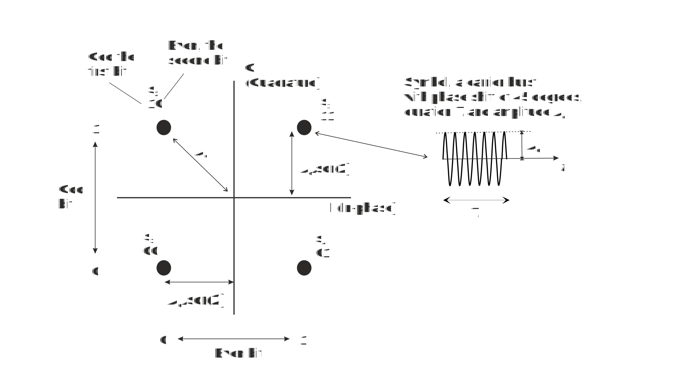
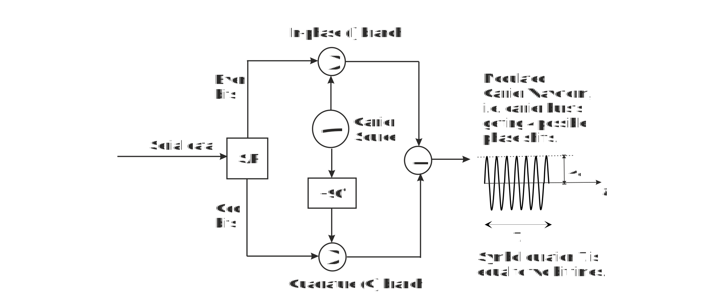

Objective of this assignment is to illustrate and clarify operation of digital 4-phase (QPSK or 4-PSK (Phase Shift Keying)) continuous wave (CW) modulation method.
Exercise 1 illustrates operation of QPSK modulator in the transmitter. It transfers spectrum of data from baseband (original frequency band of data that is around zero frequency) to frequency band around usually high carrier frequency.
Exercise 2 illustrates operation of the demodulator and detector in the receiver. Demodulator transfers spectrum of the received signal from carrier frequencies back to the baseband and the detector decides, which of the digital symbols was received.
Exercise 3 explains impact of noise to QPSK.-system. The higher is the more errors occur and Bit Error Rate (BER) is reduced.
QPSK is one of the so called Continuous Wave (CW) modulation methods, which transfer spectrum of data from zero to higher frequencies with the help of the carrier wave. It is a digital pure phase modulation method where amplitude and frequency of all symbols is the same and phase shift alone contains digital information that is values of two bits in QPSK.
One easy and illustrative way to describe many modulation methods is the constellation diagram shown in the figure below. It consists of two axis:
I = In-phase axis that represents zero phase shift carrier wave component that is cos(ωct).
Q = Quadrature axis that represents carrier waveform component in 90 degrees phase shift that is cos(ωct +π/2).
Distance of each symbol point from the origin corresponds to the amplitude Ac of the carrier wave. In QPSK distance of all symbols from origin is the same because carrier amplitude of all symbols is the same. The only difference between four symbols of QPSK is their phase shift.
Constellation diagram of QPSK modulation.
Each signal point of constellation represents one symbol, a carrier burst, with phase shift of 45, 135, -45 or -135 degrees or, in radians, π/2, 3π/2, - π/2 or -3π/2. Constellation diagram does not show duration T of the burst or symbol, and it must be given separately. When symbol duration T is known, the symbol rate is
r = 1/T Baud [Baud = 1/sec]
QPSK uses four different symbols, one for all possible combination of two bits. Then each symbol carry two bits of information and bit rate is two times the symbol rate, i.e. the bit rate
rb = 2*r bps
Example
When the carrier amplitude is Ac and symbol duration T = 1μs, the symbol rate r = 1/T = 1 MBaud. To transmit bit values 11, symbol s1 is sent as a 1μs carrier waveform
s1(t) = Ac cos(ωct + π/4)
In QPSK each symbol carries values of two bits and thus its bit rate doubled compared to symbol rate. Note that symbols closest to each other are defined to differ only on one bit position. This principle is called Gray-coding and it minimizes bit error rate (BER) because most symbol errors occur between neighbor symbols and now each symbol error usually makes only one bit error.
Each QPSK-symbol consists of in-phase (I) and quadrature (Q) carrier components. In constellation diagram I-axis corresponds to in-phase carrier component that is cos(ωct) and Q-axis corresponds to quadrature component that is cos(ωct + π/2) = -sin (ωct). We may split up any carrier waveform to these two components.
Example
Symbol s4 is transmitted as waveform s4(t) = Ac cos(ωct + π/4). Using trigonometric identity: cos(a+-b) = cos a*cos b -+ sin a sin b, we may write: s4(t) = Ac cos(ωct - π/4) = Ac cos(ωct) cos(-π/4) + Ac sin(ωct) sin (π/4). Using identity cos(-π/4) = sin (π/4) = 1⁄√2, we get s4(t)=Ac/√2 cos(ωct)+Ac/√2 sin(ωct)=Ac/√2 cos(ωct)-Ac/√2 cos(ωct+π/2). when we use identity sin a = - cos(a+π/2).
We see from the constellation diagram and example above that symbol s4 consists of positive in-phase component and negative quadrature component, both with amplitude of Ac⁄√2.
Constellation diagram above explains also operation of QPSK modulator where bipolar binary data (value 1⁄√2 for binary 1 and (-1)⁄√2 for binary 0) modulates I and Q components of the carrier independently, see figure below. Then modulated carrier components are added to make up complete modulated carrier waveform, a radio burst or symbol. In our example implementation the first bit and all odd numbered bits modulate quadrature component so that at the input of the adder (lower branch in the figure below) it is
for binary 1: Ac/√2 cos(ωct+π/2)=-Ac/√2 sin(ωct)
for binary 0: Ac/√2 cos(ωct+π/2) = Ac/√2 sin(ωct)
QPSK Modulator
Example
Assume that the first bit is 1 and second 0 then signal s2 is transmitted. Now Serial-Parallel(S/P) sends binary 1, that is value 1⁄√2, to lower branch where it multiplies Quadrature carrier waveform Ac/√2 cos(ωct+π/2. To upper branch binary 0, value (-1)⁄√2, is sent to multiply In- phase carrier Ac/√2 cos(ωct). Then at the output of the Adder we will have complete symbol s2 that is:
s2 (t)=Ac/√2 cos(ωct+π/2)- Ac/√2 cos(ωct)=Ac/√2 cos(ωct+π/2)-Ac/√2 cos(ωct)
Ac/√2 [cos(ωct)cos(π/2)-sin(ωct) sin(π/2)-cos(ωct)]=
-Ac/√2 [sin(ωct)+cos(ωct)]=-Ac/√2 [cos(ωct-π/4)]= Ac cos(ωct+3π/4)
This corresponds to signal s2 in the constellation figure above.
Synchronous receiver multiplies received QPSK signal with in-phase and quadrature carrier waveform as shown in the figure below. Products are integrated over the symbol period T and in the end of symbol decision is made if received bit from each branch is 1 or 0. If output of the integrator is positive binary 1 is detected and, if it is negative, binary 0 is detected.
Examnple
Assume that s2 (representing bits 10) was transmitted and then the received signal is (see constellation figure) Ac cos(ωct+3π/4).
In the upper branch of the receiver in the figure below multiplies it by Ac cos(ωct) and then at the input of the upper integrator we have:
Up to this point html is written
A great advantage of full carrier AM was that for message detection we need just to follow envelope of the carrier waveform. Receiver does not need to know exact frequency or phase shift of the carrier. This made it possible to make low cost broadcast radio receivers almost one hundred years ago. Figure 4 shows actual implementation of envelope detector. It contains rectifier (diode), Low Pass Filter (R1 and C1) and DC-block (C2)

Envelope detector for AM
Envelope detector is studied in Exercise 3.
Figure below shows a simple example of full carrier ASK, where modulating data is periodic sequence of binary ones and zeros. Modulation index or depth is 100%. In ASK we transmit radio bursts which represent value of a digital symbol.

ASK for binary data …101010…
When data is originally in bipolar format as in figure 5, we need to add DC voltage 1 V to data and then multiply carrier by that sum signal.
1. What does the AM-modulator transmit when modulating message is zero?
2. In AM modulator the message varies carrier’s
3. Output of envelope detector follows received signal’s
4. In digital AM, ASK, digital message is transmitted as a discrete value of carrier’s
When you have answered all the questions you can submit your answers.
Congratulation, you have passed the test and may start Exercise 1: Signal wavefom and Spectrum.
Test failed. Consider again answers that are not correct.